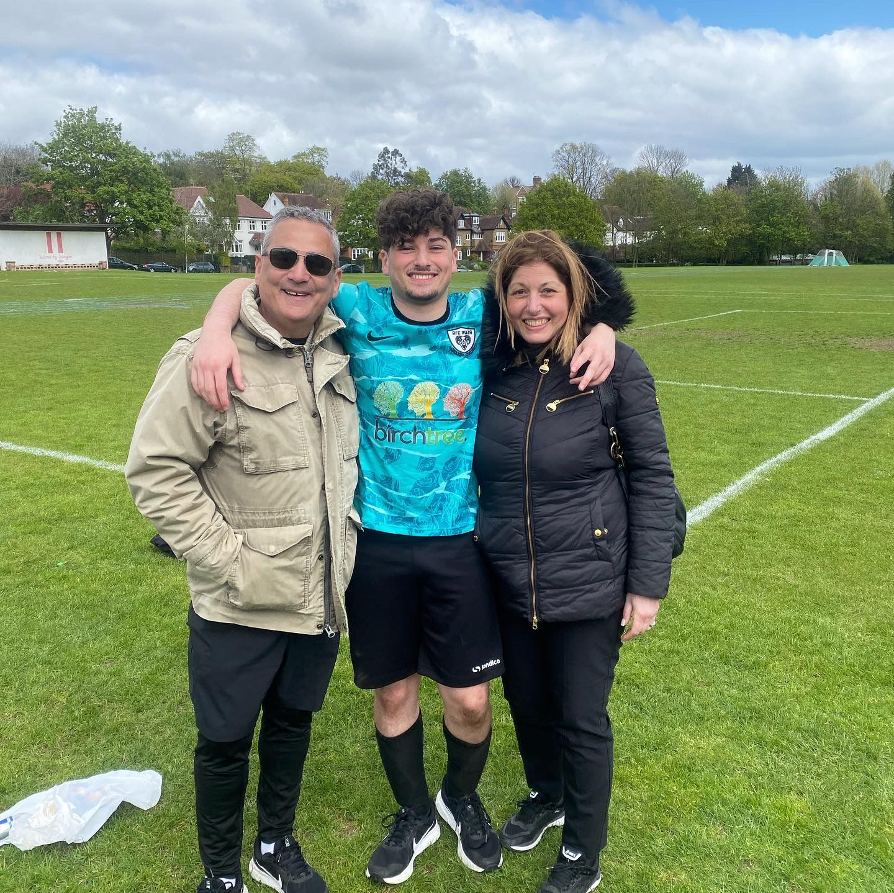

Match Report - Highgate Albion 2s (A)
Following a huge win against a dangerous side in AFC Oakwood, the Roza were out in force again against a strong Highgate Albion. The 2 teams, sat keenly in second and third before today’s fixture, knew a result would be definitive in terms of this seasons standings.
Starting XI: Nicholas Christou; Deano Spyrou, Terry Savva, Chris Johnson, Rees Colgan; Michael Georgiades, Saj Rajaratnam, Danny Smith; Ben Reynolds, Steph Savva, Alex Andreou
Roza, playing in their blue away strip, started slow and struggled to play out from the back, playing up a steep hill in the first half. This suited Highgate who were clearly maximising their experience on their home turf. Albion played from back to font extremely quickly and managed to get in behind the Roza back line frequently in the first half hour. Our captain today, Terry Savva, along with centre back partner Chris Johnson did well to handle the quick counter attacks, however eventually the home side capitalised with 2 clinical finishes to go 2-0 up.
With around 15 minutes to go before half time, Roza seemed to settle. Alex Andreou along with Roza’s number 9, Steph Savva, started to receive the ball to feet and turn; a dangerous sight, and Highgate knew it. This eventually payed dividends, with Steph beating his man after some good work in the box, only to be fouled before being able to get a shot away. Penalty to Roza. It goes without saying that this was keenly dispatched by Roza’s number 9, to send us to the half time break in touching distance.
The half time team talk was a stern one, which also saw 2 changes. Our ever reliable Chris Johnson and Ben Reynolds maked way for Giorgio Koullas and Cal Cook, who themselves have both been in top form recently. Steph Savva also made way for Adam Shaw shortly after the break.
Roza battled better in the second half, and started to win more duels in the midfield, allowing the team to sustain pressure in the Highgate final third. This allowed the Roza attackers more opportunities in dangerous areas, and Alex Andreou certainly made the most of it. A constant threat whenever he received the ball, he beat his man multiple times attacking down Roza’s left; So much so, the opposition had to double up on him. Unfortunately for Highgate though, he beat them both, before eventually being taken down inside the box for Roza’s second penalty of the day.
Shaw, who had been extremely dangerous since coming on, took responsibility and lashed in a fantastic penalty off the crossbar. 2-2, 15 minutes to go, game on. From here the game became extremely open, with Highgate now having to venture higher up the pitch. They eventually caught Roza cold and played a ball through to their number 9 who came into contact with Jake Koumi, introduced during the second half, inside the box. The referee, who must have felt like he owed Highgate something, amazingly called for a penalty to Highgate’s delight. What they hadn’t quite considered, was who was standing in that goal: Nicholas Christou. He pulled off an incredible save low to his left (with the excellent advice of Cal Cook), to keep the game level.
From there on, Highgate missed a series of decent chances, but ultimately the Roza held on for what was their first league draw in the club’s history.
Roza are not often those to celebrate dropped points, however we can look back fondly on the draw as a marker of the team’s progress in maturity and game management over the season. 6 months ago, the game may have ended differently.
Man of the Match went to Nicholas Christou for a monstrous display; well deserved for someone how has been extremely patient all season long, and very good when called upon.

The season as a whole has been a productive one, lessons have been learnt, bonds have been built, and the team has grown into one that even the toughest don’t want to face.
Hungry for more, the Roza boys know they can be even better. And will be.
Next season promises to be a great one, but before then…. See you in  !
!
#UTR